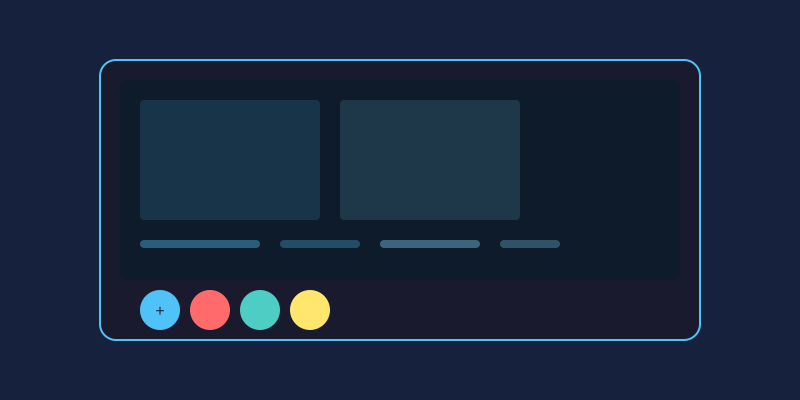

Choosing between a browser-based editor and an installed application is one of the first decisions every photographer faces. Neither option is universally better — each shines in different situations. Here is an honest look at how they stack up.
Performance and Raw Power
Desktop programs still hold the edge when it comes to heavy lifting. Editing a 100-megapixel RAW file, stitching panoramas, or applying dozens of layers happens faster with direct access to your hardware. Online editors depend on your internet connection and browser capabilities, though modern tools have narrowed this gap considerably. For everyday tasks like cropping, resizing, and quick touch-ups, most people will not notice a difference.
Feature Depth
Professional desktop suites typically include advanced features such as non-destructive RAW processing, lens correction profiles, and sophisticated masking systems. Browser editors focus on the features people actually use daily: filters, text overlays, basic retouching, and format conversion. If your workflow rarely goes beyond these essentials, a web tool covers you completely.
Cost Considerations
- Desktop: Often requires a one-time purchase or ongoing subscription that can add up over years.
- Online: Many capable editors are free or freemium, letting you pay only when you need premium exports or AI features.
Budget-conscious users and hobbyists frequently find that free online tools deliver everything they need without any financial commitment.
Accessibility Across Devices
This is where browser editors dominate. Your work follows you from a library computer to a friend's laptop to your own tablet. There is nothing to install, nothing to update manually, and no compatibility worries across Windows, macOS, Linux, or ChromeOS.
Privacy and Data Control
When images are processed locally on your machine, sensitive photos never leave your hard drive. With cloud-based editing, files may be uploaded to remote servers, so always review a service's privacy policy before working with personal or client imagery. Some modern online editors process everything in-browser instead, keeping files on your device while still offering web convenience.
Collaboration and Sharing
Teams benefit enormously from cloud workflows. Shared projects, comment threads, and instant link-based sharing make online platforms ideal for group work. Desktop software traditionally handles collaboration through exported files and versioned folders, which is slower but gives you full control.
Working Without Internet
Traveling, camping, or dealing with unreliable Wi-Fi? Desktop editors keep working regardless of connectivity. Browser tools generally require a stable connection, although some now offer offline modes through progressive web app technology.
The Verdict
Pick a desktop editor if you handle huge files, need specialized professional features, work offline often, or manage confidential imagery. Choose an online editor if you value zero installation, cross-device access, low cost, and quick edits on the go. Many photographers happily use both: a web tool for rapid daily fixes and a desktop suite for demanding projects.